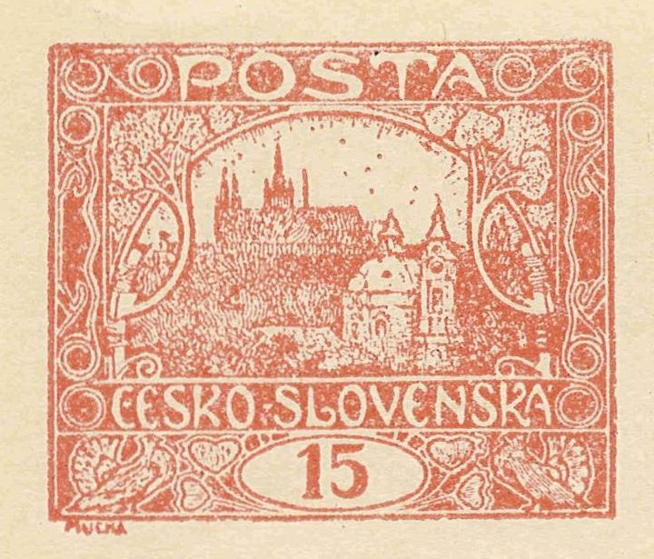

Hradčany 15h — brick red
The most varied denomination of the first Czechoslovak stamp issue. Seven printing plates, five catalogued shades and eight official perforation varieties — a specialist's paradise.
POFIS 7Michel 26 5th design issued 7 June 1919

Key facts
| Issued | 7. 6. 1919 |
|---|---|
| Design | fifth design — large white inscription on coloured ground, without sun and bush; larger drawing of St. Nicholas church |
| Designer | Alfons Mucha |
| Printing | letterpress (typography), Czech Graphic Union, Prague; plates of 100 stamp fields |
| Catalogues | POFIS 7 (7a–7d) · MERKUR 7 · Michel 26 · SG 26 |
| Print run | 112 504 400 (imperforate: 52 031 400 · officially perforated: 60 473 000) |
| Printing plates | Plates I, II, VII (brick red group) · plates III–VI (vermilion group) |
| Documented usage | June 1919 – April 1921 (based on 6,243 dated cancellations in the statistics) |
From the history of the issue
The first Czechoslovak stamps were born in the hectic weeks after the founding of the republic. On 1 November 1918 ministerial counsellor Viliam Elias proposed Hradčany (Prague Castle) as the motif, and the first values, 5 h and 10 h, appeared on 18 December 1918. The Hradčany issue eventually comprised five different designs and 26 values, 14 of which also appeared perforated.
The Czech Graphic Union printing works was not prepared for stamp production — its outdated letterpress machines produced a wealth of printing flaws and varieties. This is precisely why the issue, and the 15 h value in particular, is such a rewarding field for specialised study.
The 15 h is among collectors' favourites: seven printing plates, still-debated shades, eight perforation gauges and a wealth of types and plate flaws.
Explore
Letterpress
How the issue was printed, what goes wrong in it and what the collector gains.
Printing plates
Plates I–VII, their shades, perforations and reconstruction status.
Position gallery
700 images — all 100 stamp fields of each of the 7 plates.
Fifth-design types
Spiral and crossbar types on the 15h — field overview.
Perforations
8 official groups A–H, the exceptional perforations and their occurrence by plate.
Production flaws
Flaws of perforation, printing and paper — from shifted perforation to creased paper.
Statistics
Interactive charts from an analysis of 21,329 stamps.
Articles
Cracked plate 11/II, damaged frame 60/VI, a bargain treasure…
Cancel map
B/C/E post offices (plates 1–2) and plate VII usage on a map.